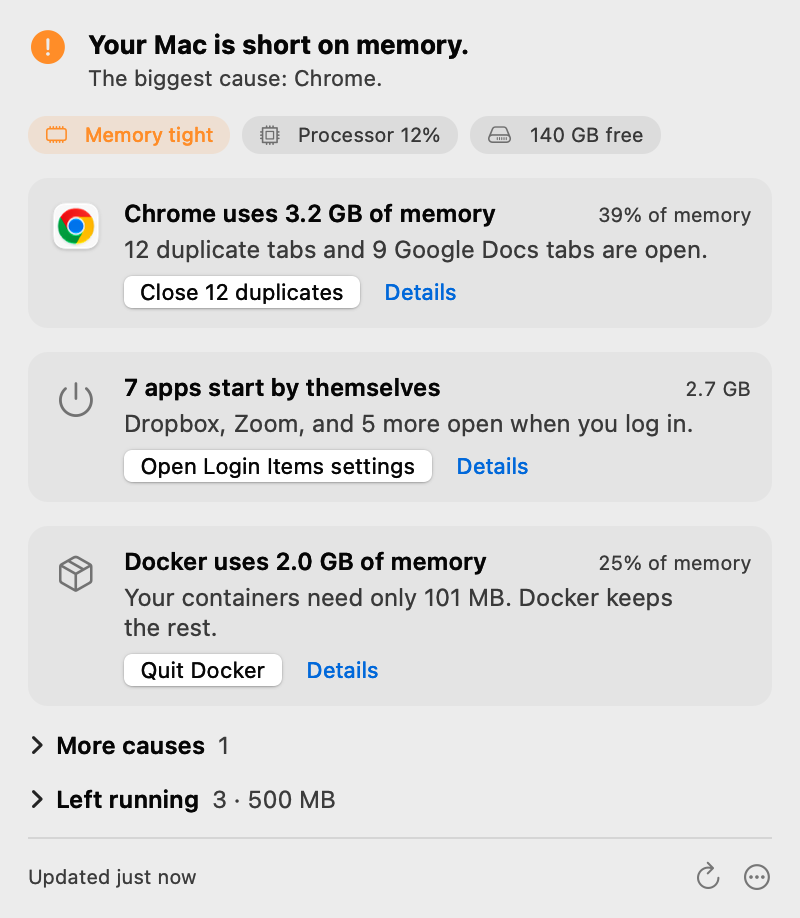
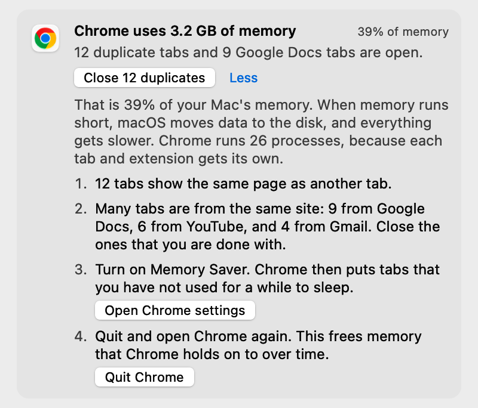
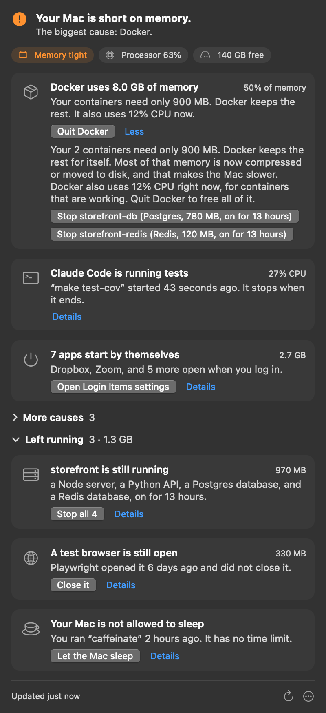

Why is your Mac slow?
One line tells you.
Click the gauge in your menu bar. Sluggish names the cause in plain words and gives you one safe fix. Nothing runs until you click, and it works on older Intel Macs too.
No cleanup. No scare screens. No subscription. macOS 14 or later, on Apple silicon and Intel.

Click. Read. Fix.
No dashboard, no charts, no history. You get the answer and one thing to do.
Click the gauge
It sits in your menu bar and does nothing until you click it.
Read one line
The top line names the main cause, for example "Your Mac is short on memory. The biggest cause: Chrome."
Click one button
It quits an app, closes duplicate tabs, or opens the correct page of System Settings.
What it finds
The causes that slow down most Macs, in the words you would use.
Your Mac is too hot
macOS slows the processor to protect the hardware. Sluggish tells you why, and what to do.
A browser uses too much memory
It counts duplicate tabs and piles of tabs from one site, and it can close the duplicates.
Your disk is almost full
It opens Storage settings, so you can see what uses the space.
Too many apps start by themselves
It names them, shows their memory, and opens Login Items.
Photos, iCloud or Spotlight is busy
This is normal, and Sluggish tells you that it stops by itself.

What Sluggish never does
A tool for a slow Mac must not slow the Mac, and it must not scare you.
- It never deletes files.
- It never runs in the background. With the panel closed, it checks nothing.
- It never quits an app unless you click. Quit asks the app to save your work, the same as Cmd-Q.
- It never tells you that your Mac is infected.
- It never needs an account or a sign-in.
- It never asks for permissions at install. It asks to read your browser tabs only when you click "See my open tabs".
Nothing leaves your Mac
Sluggish makes no network connections of its own. Watch it with LuLu or Little Snitch: it opens none.
- No telemetry
- No analytics
- No crash reporter
- No account
- No update checks
- License checked on your Mac
- AI line made on your Mac
One exception, and you choose it: a developer setting asks the GitHub command-line tool for pull request titles, with your own login. It stays off until you turn it on.
For developers
See what your AI coding agents left running, and which session started it.
Sluggish shows a developer card only when the cause exists. It finds:
- the Docker VM, and how much memory your containers really need
- dev servers left running for days, grouped by git repo and branch, with the pull request title
- test browsers that Playwright did not close, and booted Xcode simulators
caffeinatewith no time limit- processes that Claude Code started, and the session or job that started them
- processes it does not recognize: on macOS 26, Apple's on-device model reads the command and writes one line about what it does, marked as a guess
Run Sluggish --print in Terminal to get the same report as text.

One price, one time
No subscription, no upsell inside the app.
- Use it on all of your own Macs
- Your first 10 checks are free, with every feature
- All 1.x updates are free
- A full refund within 30 days
Paddle.com handles the payment and the taxes.
Questions
Is Sluggish a cleaner app?
No. It does not delete files or clear caches. It tells you why your Mac is slow, and you choose what to do.
How is it different from other apps that explain a slow Mac?
Sluggish runs nothing in the background. It never deletes or moves files. It works on Intel Macs with macOS 14. It has no charts and no history. You get the answer and one fix.
Will it make my Mac faster?
Sluggish does not change your Mac by itself. It shows the cause and one fix. The fix removes the cause that Sluggish found.
Does Sluggish use AI?
Only for one line, and only on your Mac. When Sluggish finds a process that it does not recognize, Apple's on-device model writes one line about what the process does, marked as a guess. This needs macOS 26 with Apple Intelligence on, and it runs only when you open that card's details. Nothing leaves your Mac. Every other word in the panel comes from fixed rules, not from a model.
What counts as a check in the trial?
Each time you open the panel and Sluggish looks at your Mac. Checks within one hour count as one.
Why does it ask to control Safari or Chrome?
macOS calls the permission to read tab addresses "control". Sluggish uses it to find duplicate tabs, and it closes tabs only when you click a button. Every other card works without this permission.
What if Sluggish says that my Mac looks fine?
Then it found no cause at that moment. Open it again at the next slow moment. If your Mac is still slow, write to us. Each report helps Sluggish find more causes.
Does it work on Intel Macs?
Yes. It is one app for Apple silicon and Intel Macs with macOS 14 or later.
What if I do not like it?
Write to us within 30 days for a full refund.